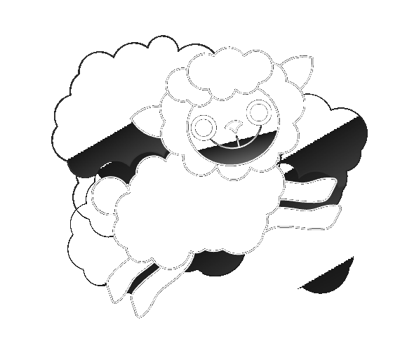
Design Research · PetPalWhere PetPal sits among direct rivals, adjacent tools, and global category leaders — and which UX patterns earn a place in our MVP.
15 products across three baskets: Hard — same product, same audience, EU market. Soft — different product, same job-to-be-done. Aspirational — international benchmarks in the pet companion category.
| Name | Type | Why in this group | Outstanding feature |
|---|---|---|---|
| Lassie 🇸🇪 | Pet insurance + health app | SE market, insurance core with app-based health layer | Gamified preventive-care courses that earn premium discounts |
| Felmo 🇩🇪 | Home vet visits + records | DE market, vet-to-owner connection built in | Vet visits at home + digital record created automatically |
| FirstVet 🇸🇪/EU | Video vet consultation + shop | EU-wide, telehealth bundled into insurance | Video consult 6am–2am, often fully insurance-covered |
| PetDesk 🇺🇸 (EU clinics) | Vet clinic communication platform | Owner-facing layer over clinic software — white-label model | 24/7 booking + two-way messaging with clinic |
| Tractive 🇦🇹 | GPS + health tracker | EU-born, large base, overlapping audience | Live location + activity/sleep health visualisation |
| Name | Type | Why in this group | Outstanding feature |
|---|---|---|---|
| MyTherapy | Medication reminders (human health) | Same reminder + doctor-sharing JTBD, best-in-class UX | One-time code to share health report with a doctor |
Google Keep [?] | Notes app | Default tool people use today for ad-hoc pet info | Zero-friction quick capture |
| Notion | Personal workspace | Power users build custom pet dashboards here | Infinite flexibility — but no pet-specific structure |
| Apple Wallet | Document/card storage | People already store insurance cards, vet cards here | Face ID–gated, lock-screen-level access |
| Tractive (health module) | GPS + health tracker | Same audience, passive health logging vs. manual entry | Automatic activity/sleep tracking |
| Name | Type | Why in this group | Outstanding feature |
|---|---|---|---|
| Rover 🇺🇸 | Pet sitting marketplace | Pet care profile shared with sitters at scale | Sitter-facing card: feeding, meds, behaviour, allergies |
| Airvet 🇺🇸 | Telehealth via employee benefits | B2B2C distribution — future monetisation channel | On-demand video vet bundled as workplace perk |
| BabelBark 🇺🇸 | Multi-stakeholder pet platform | Closest existing attempt at PetPal's full vision | Owner + vet + business + shelter, role-based access |
| PetDesk (owner side) | Vet communication platform | White-label potential, adjacent business model | Free to owners, B2B SaaS to clinics |
| MyTherapy (cross-category) | Health reminder/diary | Lightweight sharing pattern transferable to PetPal | Doctor-sharing via one-time code |
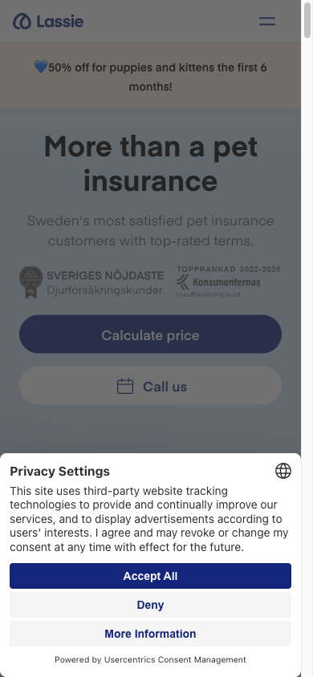
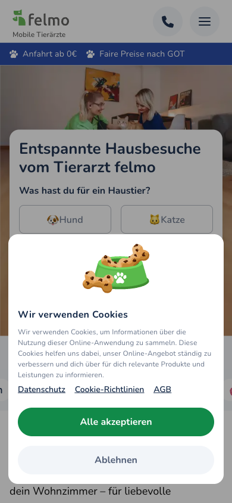
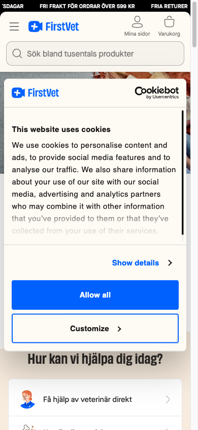
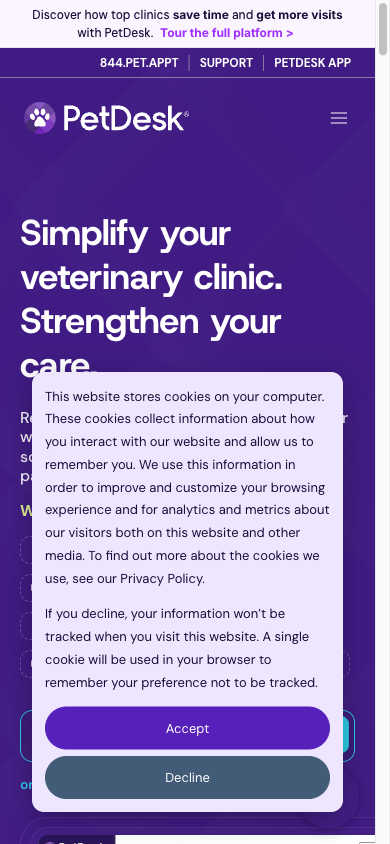
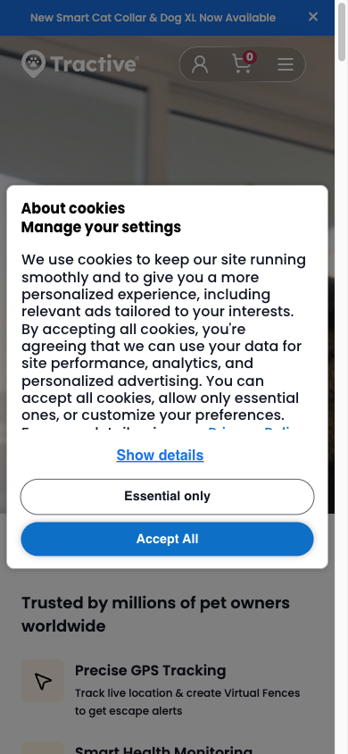
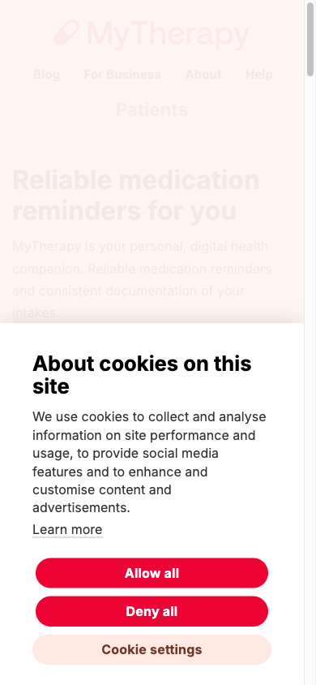
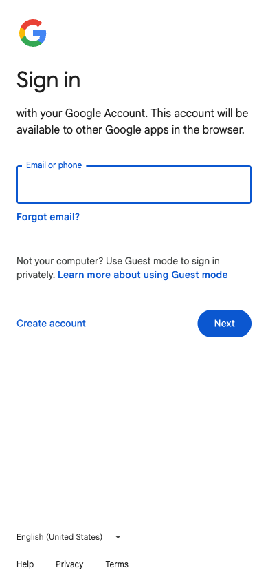
[?] behind login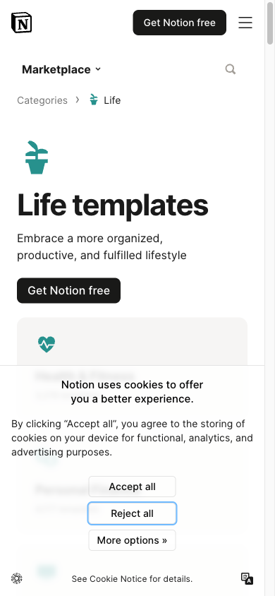
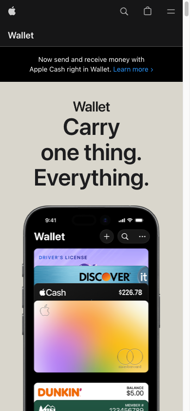
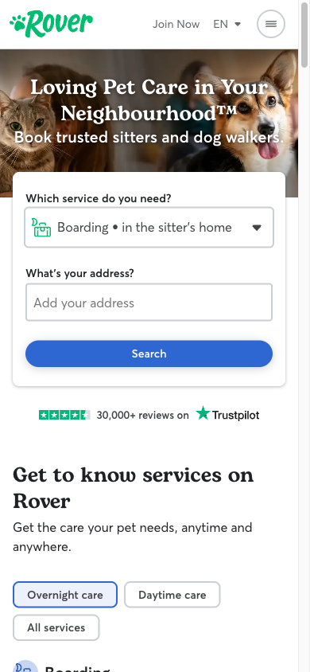
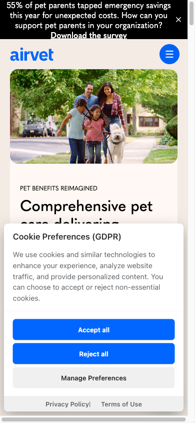
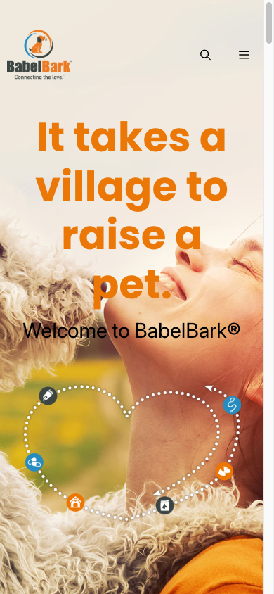
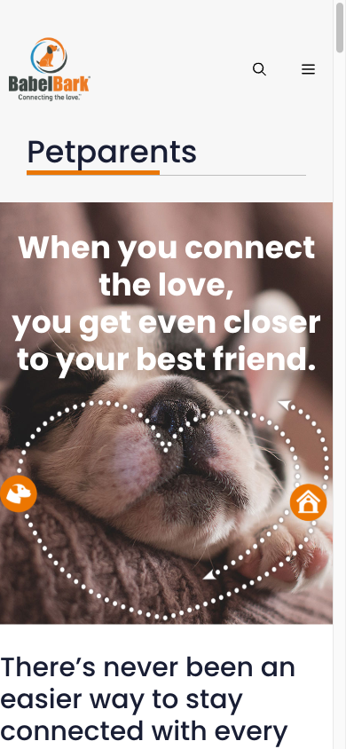
Deep dive on PetPal's core dimension: keeping important pet info, managing health events, and sharing an overview easily with vets & sitters. Scored 1–5 across 8 criteria.
| Criterion | BabelBark | Rover | MyTherapy | Lassie | PetDesk |
|---|---|---|---|---|---|
| 1. Profile completeness (medical + personality/preferences) | 5 | 4 | 3 | 3 | 3 |
| 2. Health event tracking & reminders | 5 | 2 | 5 | 5 | 4 |
| 3. Document/record storage | 4 | 2 | 3 | 3 | 3 |
| 4. Sharing mechanism simplicity | 5 | 5 | 5 | 3 | 4 |
| 5. Role-based access granularity | 5 | 3 | 2 | 2 | 4 |
| 6. At-a-glance overview | 4 | 4 | 5 | 4 | 3 |
| 7. Update/maintenance friction (5 = low effort) | 3 | 4 | 5 | 3 | 4 |
| 8. Multi-stakeholder ecosystem | 5 | 2 | 2 | 3 | 4 |
| Total (/40) | 36 | 26 | 30 | 26 | 29 |
Five fundamentally different patterns for the core task: keeping pet info updated and sharing it with vets & sitters.
Direct quotes from verified Trustpilot reviews, grouped by app and naming the specific feature each reviewer credits. Pulled live from each company's Trustpilot profile (accessed Jun 2026); review titles link to the original.
The app is easy to use, the tracking is reliable, and it gives me confidence whenever we're out hiking, traveling, or even just going about our daily routine. I hope I never need to use the emergency tracking features, but having them available makes me feel much more secure as a dog owner.
I love being able to virtually fence off roads and be alerted when she is out of bounds... I also love the LED light on her collar which makes it much easier to locate her in the dark!
Uploaded invoice from vet after the description of the incident in the app. It was processed in minutes automatically and it refund was in bank statement a couple of minutes later. Hope it keeps working like this in the future :)
We had a video call with Dr Cato as our cat 'wasn't right'... I got a video call within half an hour of requesting one and the advice she gave was to visit the emergency vet which we did. Turns out our cat has pancreatitis.
Very quick to get an appointment in the middle of the night. Dr Dudek was fantastic and was thorough in questioning, supporting me to examine my cat to give her more information. The advice and plan given was thorough and covered multiple options.
Excellent communication and appointment availability, all the vets I have met are punctual, friendly, kind to the cats and good at their job... it's so much less stressful for the cats.
This app also has a function that allows you to record your health status such as weight and blood pressure and visually grasp the situation... it is possible to automatically summarize health conditions and medication intake status and create health reports in PDF format. Once you have created a report, you can send it by email.
It was very easy to book a sitter through the website, and I was certain that my pet was going to be safe and well-cared for. It is wonderful to know that you can be provided with pictures and updates from time to time.
Fit assessment of the five patterns against CLAUDE.md, plus the mechanisms worth transferring into PetPal's MVP.
Condition: sharing with a one-off caregiver (last-minute sitter, single vet visit).